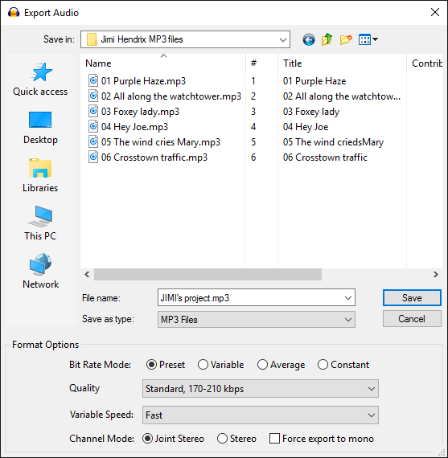

Export Options
This screenshot shows the Export Audio dialog with options for MP3 format export:
- 
Options for the various formats are:
- MP3 Export Options
- AAC Export Options
- AC3 Export Options
- AMR Export Options
- Custom FFmpeg Export Options
- FLAC Export Options
- MP2 Export Options
- Ogg Vorbis Export Options
- Other uncompressed files Export Options
- WMA Export Options
By default, all exports are mixed down to mono (one channel) or stereo (two channels). If you want to export to more channels, enable "Use custom mix" in Import / Export Preferences. After pressing "Save" in the export dialog, the Advanced Mixing Options dialog appears where you can map the Audacity tracks to channels. Metadata Editor (if enabled) appears after OK'ing the Advanced Mixing Options.
Custom FFmpeg export options
In the Export dialog when you select Custom FFmpeg Export in the Save as type dropdown, then the Options pane will contain the button. Clicking on the button will bring up the custom options dialog. See Custom FFmpeg Export Options for more details.
| Note that when using custom FFmpeg export it is necessary to supply the full file name and the extension in the File name: field as Audacity does not automatically add the extension in this case. Otherwise you will need to manually add the extension to the file name after export. |